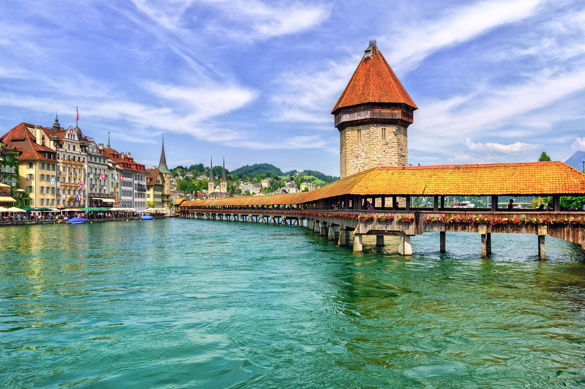
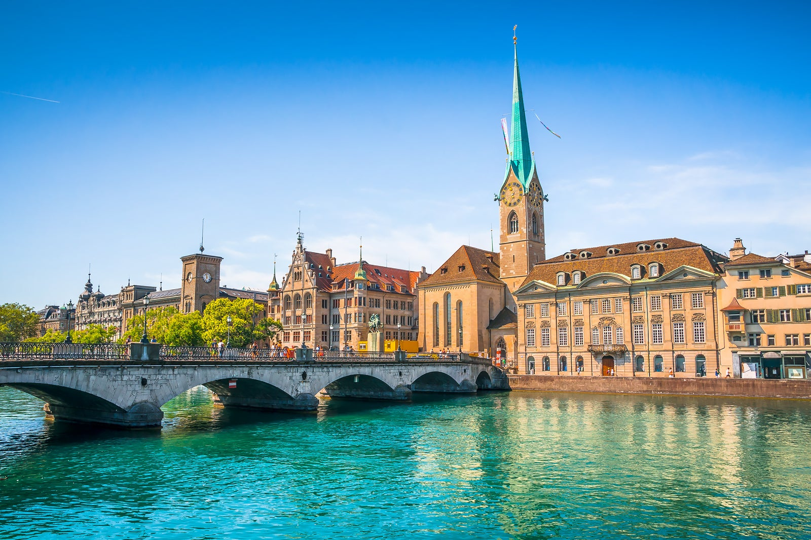
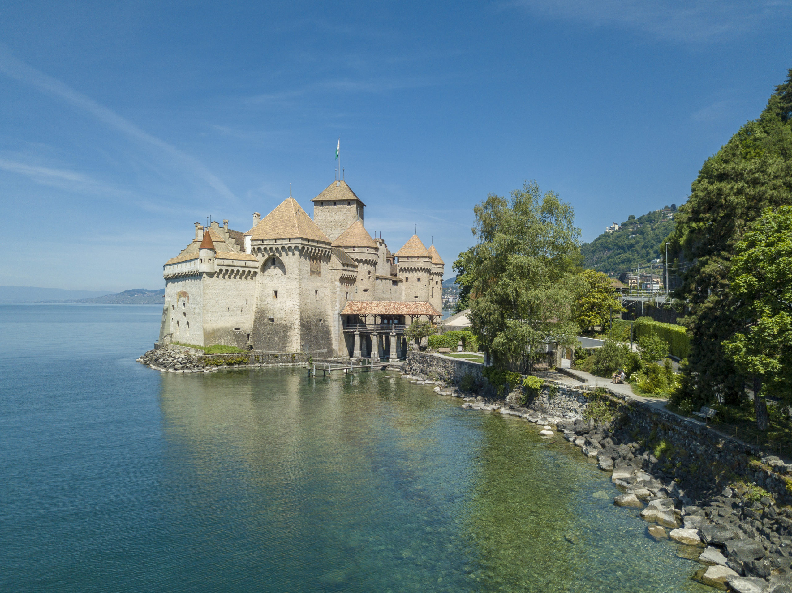

Swiss adalah sebuah negara yang terletak di Eropa Tengah dan terkenal dengan lanskap alam yang indah, kekayaan budaya, dan sistem keuangan yang kuat
Swiss adalah negara yang penuh keunikan dan memiliki peran penting dalam perdamaian global dan stabilitas ekonomi. Itu adalah negara yang sangat dihormati dan berperan penting dalam banyak aspek kehidupan internasional.
Lucerne

Lucerne adalah kota tua yang indah yang terletak di tepi Danau Lucerne di Swiss Tengah.
Berikut adalah sejarah singkat Kota Bersejarah Lucerne:
Asal Mula : Lucerne memiliki sejarah yang panjang yang dapat ditelusuri kembali ke abad pertengahan. Kota ini didirikan pada abad ke-8 oleh bangsa Prancis dan menjadi bagian dari Kadipaten Schwyz pada abad ke-14.
Peran dalam Perdamaian Stans : Lucerne terkenal karena peran pentingnya dalam Perdamaian Stans pada tahun 1481. Ini adalah perjanjian damai antara negara-negara Swiss yang berkonflik yang mengakhiri perang di antara mereka dan memperkuat Kesatuan Swiss.
Kota Dagang dan Transportasi : Lucerne tumbuh menjadi kota dagang yang penting di abad pertengahan dan menjadi pusat perdagangan wol. Juga, lokasinya yang strategis di persimpangan rute perdagangan dan transportasi membuatnya menjadi kota penting di Swiss.
Jembatan Chapel Bridge : Salah satu daya tarik utama Lucerne adalah Chapel Bridge (Kapellbrücke), jembatan kayu yang indah yang dibangun pada abad ke-14. Jembatan ini memiliki menara tengah yang dihiasi dengan lukisan yang menggambarkan sejarah Lucerne.
Pusat Kota Bersejarah : Pusat kota Lucerne memiliki jalan-jalan berbatu yang indah, bangunan-bangunan bersejarah, dan bangunan-bangunan dengan arsitektur yang menawan, seperti Balai Kota dan Katedral Lucerne.
Pariwisata: Lucerne telah menjadi tujuan wisata yang populer sejak abad ke-19. Pengunjung datang untuk menikmati keindahan alam di sekitarnya dan untuk menjelajahi sejarah dan budayanya yang kaya.
Kemajuan Transportasi : Lucerne terkenal karena stasiun kereta api yang indah, yang menghubungkannya dengan berbagai destinasi wisata Swiss dan menjadi gerbang untuk menjelajahi Pegunungan Alpen.
Lucerne adalah kota yang indah dan penuh sejarah di Swiss yang menawarkan kombinasi menarik antara pesona bersejarah dan pemandangan alam yang menakjubkan. Itu juga berperan penting dalam sejarah Swiss dan perdamaian antarnegara-negara Swiss.
Kota Tua Zurich

Zurich, kota terbesar di Swiss, memiliki sejarah yang panjang dan kaya.
Berikut adalah sejarah singkat Kota Tua Zurich:
Asal Mula: Zurich memiliki sejarah yang dapat ditelusuri kembali lebih dari 2.000 tahun. Kota ini didirikan oleh bangsa Kelt pada zaman pra-Romawi dan kemudian menjadi bagian dari Kekaisaran Romawi.
AZaman Romawi : Zurich dikenal sebagai "Turicum" selama pemerintahan Romawi. Pada abad ke-4 Masehi, Zurich menjadi pusat penting bagi Kekristenan awal di wilayah tersebut.
Abad Pertengahan : Pada Abad Pertengahan, Zurich menjadi bagian dari Kesatuan Swiss, yang kemudian menjadi Swiss modern. Kota ini berkembang sebagai pusat perdagangan dan keuangan penting di Eropa.
Reformasi Zurich : Pada abad ke-16, Zurich memainkan peran penting dalam Reformasi Protestan di Swiss. Tokoh terkenal seperti Ulrich Zwingli berperan dalam perubahan ini, dan Zurich menjadi pusat Reformasi Protestan di Swiss.
Pendidikan dan Kebudayaan : Zurich juga terkenal sebagai pusat pendidikan dan kebudayaan. Pada tahun 1833, ETH Zurich (Swiss Federal Institute of Technology) didirikan, yang menjadi salah satu universitas teknik terkemuka di dunia.
Pariwisata dan Keuangan : Zurich telah menjadi tujuan wisata yang populer dan pusat keuangan global. Kota ini dikenal dengan taman-taman indahnya, Danau Zurich yang menawan, dan pusat kota yang bersejarah.
Arsitektur Bersejarah : Kota Tua Zurich (Altstadt) memiliki jalan-jalan berbatu, bangunan bersejarah, gereja-gereja tua seperti Grossmünster dan Fraumünster, serta Balai Kota yang indah.
Museum dan Galeri Seni : Zurich memiliki berbagai museum dan galeri seni terkenal, termasuk Kunsthaus Zurich yang terkenal dengan koleksi seninya yang luar biasa.
Transportasi : Zurich juga terkenal dengan sistem transportasi yang canggih, termasuk kereta api yang efisien dan Bandar Udara Zurich yang merupakan salah satu pintu gerbang terpenting ke Eropa.
Kota Tua Zurich adalah pusat sejarah dan budaya yang penting di Swiss, menggabungkan pesona bersejarah dengan perkembangan modern yang dinamis. Itu adalah tempat yang menarik untuk menjelajahi warisan Swiss yang kaya dan menikmati keindahan alam dan kesejahteraan kota.
Château de Chillon

Château de Chillon, juga dikenal sebagai Istana Chillon, adalah kastil yang terletak di tepi Danau Jenewa, dekat Montreux, Swiss.
Berikut adalah sejarah singkat Château de Chillon:
Asal Mula : Château de Chillon dibangun pada abad ke-12 dan awalnya berfungsi sebagai benteng pertahanan terhadap invasi asing. Itu dibangun di atas pulau batu di tengah Danau Jenewa, memberikan lokasi yang strategis untuk pengawasan dan pengendalian jalur perdagangan utama di daerah tersebut.
Pertahanan : Selama Abad Pertengahan, Château de Chillon adalah salah satu benteng pertahanan penting yang mengawasi jalur darat dan air di wilayah tersebut. Kastil ini memiliki tembok kuat, menara pengawas, dan sistem jembatan angkat untuk mempertahankan diri dari serangan musuh.
Kontroversi dan Perang : Château de Chillon terlibat dalam berbagai konflik selama sejarahnya, termasuk perang antara bangsa Savoy dan Swiss. Kastil ini juga digunakan sebagai tempat penahanan tahanan politik pada beberapa titik dalam sejarahnya.
Kepemilikan : Selama berabad-abad, kepemilikan Château de Chillon berpindah-pindah antara bangsa Savoy, Swiss, dan Prancis. Pada abad ke-19, kastil ini diubah menjadi museum dan secara resmi menjadi properti Swiss.
Pariwisata : Hari ini, Château de Chillon adalah salah satu tujuan wisata yang paling populer di Swiss. Kastil ini menawarkan pengunjung pemandangan indah Danau Jenewa dan Pegunungan Alpen, serta interior yang mengesankan dengan ruang-ruang bersejarah dan koleksi artefak yang berharga.
Warisan Budaya: Pada tahun 1846, kastil ini dikenal secara internasional melalui puisi karya Lord Byron yang terkenal, "The Prisoner of Chillon," yang mengisahkan pengalaman tahanan politik yang pernah ditahan di dalam kastil.
Château de Chillon adalah salah satu kastil paling terkenal dan indah di Swiss. Ini adalah tempat bersejarah yang penting dengan arsitektur abad pertengahan yang menawan, dan juga merupakan salah satu situs wisata terpopuler di negara ini.